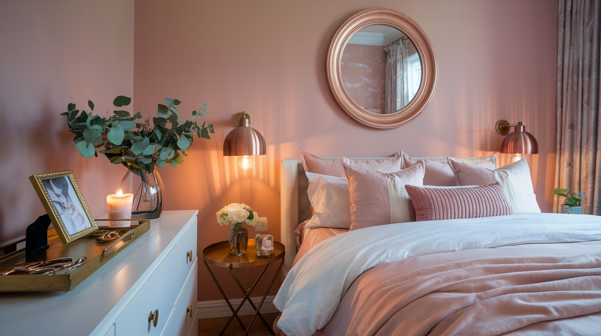
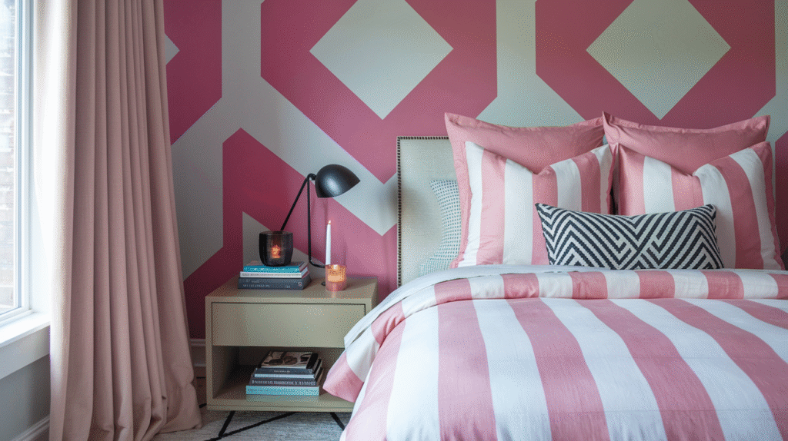
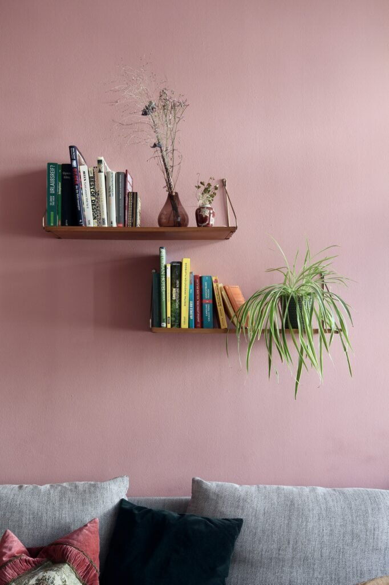
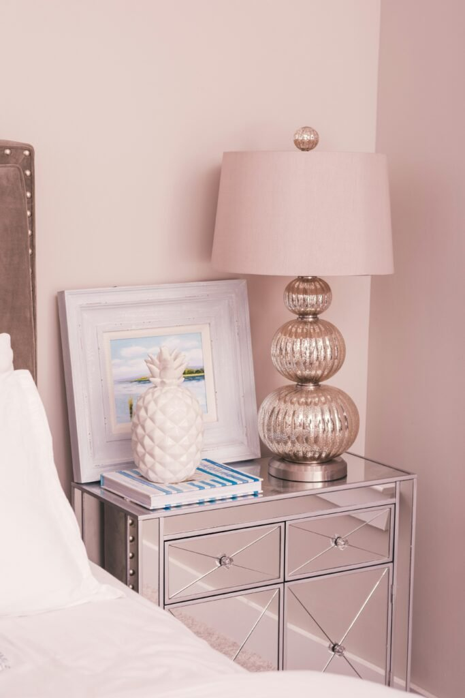
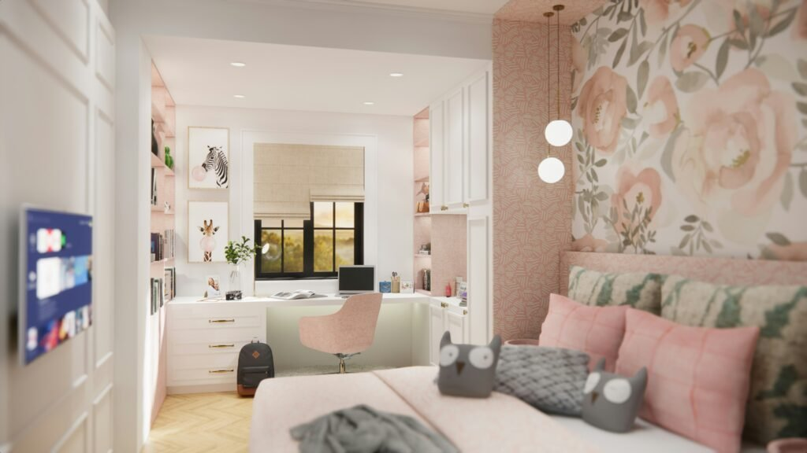
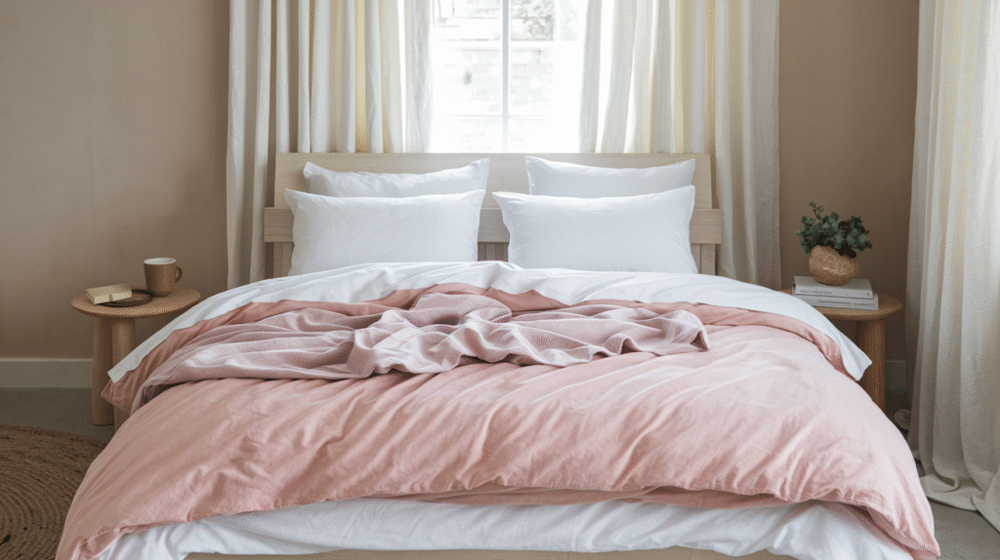
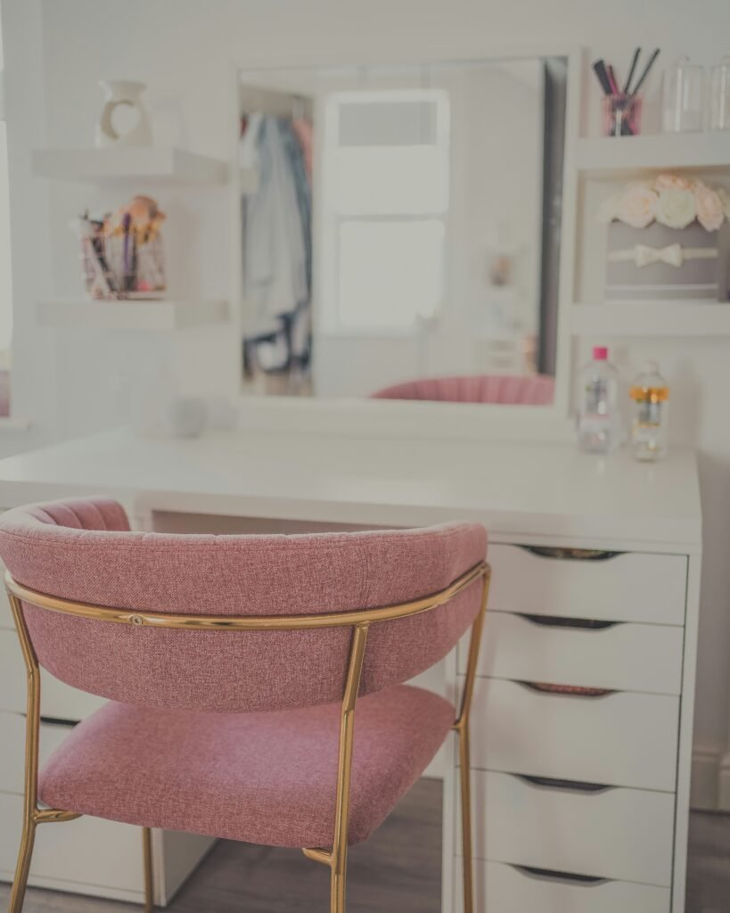
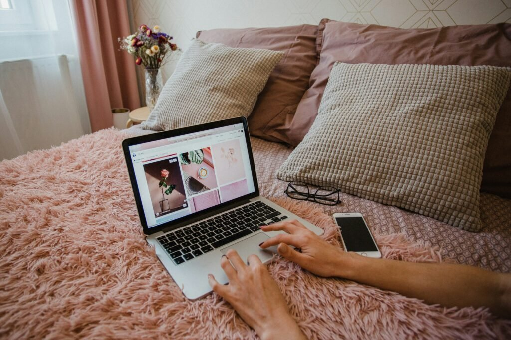
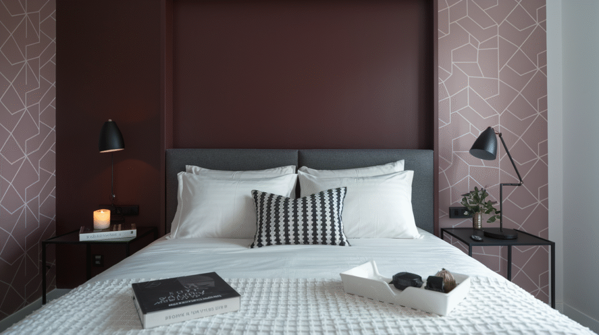
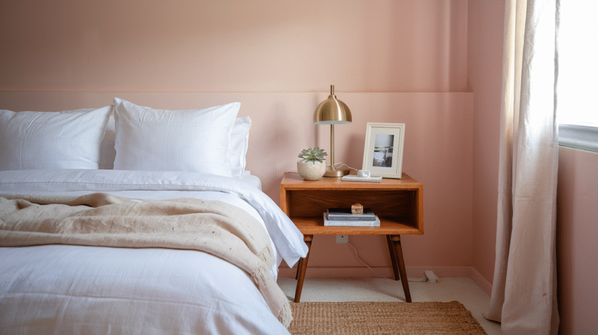

Pink bedrooms get an unfair reputation, honestly.
Say the words and most people picture cotton-candy walls or a bubblegum explosion left over from someone's childhood room.
The truth is pink can be chic, modern, and genuinely sophisticated when it is styled with any intention at all.
It is one of the most underrated color choices for a bedroom, warm, a little playful, and far more versatile than it gets credit for.
From a quiet blush accent wall to a full statement in fuchsia, the results consistently surprise people who assumed pink just was not for them.
Here are ten ways to bring it in, whether you are after something barely-there or something that commits all the way to the color.

10 Pink Bedroom Ideas Worth Trying
Let Pink Show Up in Pattern
Stripes, florals, geometrics, pink does not have to stay solid at all.
Pattern adds real dimension, and pink within a pattern keeps the whole look feeling playful rather than precious.
A pink-and-white striped duvet paired with solid blush curtains feels lighthearted but still put-together.
Bolder geometric wallpaper with pink woven through it pushes the room toward something more artsy and considered.
If clashing patterns makes you nervous, stick to one dominant print in pink and keep everything else in the room simple.
One well-placed pattern makes more impact than three competing ones ever will.

VEELIKE Blush Pink Geometric Art Deco Peel and Stick Wallpaper
Shop on AmazonBring in Natural Texture
Wood, rattan, linen, and greenery all keep a pink bedroom from feeling too polished or artificial.
Pink genuinely benefits from having some earthy company around it.
A blush throw draped over a rattan chair, pink linen bedding next to a jute rug, open wood shelves against a dusty pink wall, all of it softens the color and keeps the room feeling lived-in rather than staged for a photo.
Do not skip the plants, either.
Greenery against pink creates real contrast and life, even one trailing plant can be the detail that pulls a whole room together.

Pink Against Bold, Dark Contrasts
If neutrals are not your thing, go the opposite direction entirely.
Pink paired with navy, emerald, or matte black creates a rich, dramatic look that reads as genuinely modern rather than soft.
The most striking combinations usually pair one softer pink tone against a single darker, moodier color, a dusty pink velvet headboard against a deep navy wall, for instance.
Dramatic, yes.
Overwhelming, surprisingly not.
Pale pink bedding against a charcoal wall with black metal furniture sounds risky on paper, but the end result tends to land as moody and elegant rather than anything close to "too sweet." Pink does not need to play it safe to still feel classy.
Pink Layered With Metallics
Pink and metallics were made for each other, honestly.
Rose gold, brass, or matte gold accents paired with pink take a bedroom from cute to genuinely luxurious almost instantly.
Think blush walls with a gold-framed mirror, or a dusty pink duvet next to brass bedside lamps.
Even one mercury glass lamp on a mirrored nightstand can push the whole room toward boutique-hotel territory.
The key is restraint here, metallics should accent the space, not dominate it.
A little shimmer goes a long way before it starts reading as a jewelry store instead of an actual bedroom.

A Little Pink Through Pattern and Print
Artwork and print are the lowest-effort, highest-impact way to bring pink into a room without making any permanent decisions about it.
A blush floral wallpaper moment, a few framed prints, or a soft watercolor piece all shift a room's mood fast.
This works especially well in a space that is otherwise fairly simple, the pattern or print naturally pulls focus and adds personality on its own.
In a kids' room like this one, a floral wallpaper accent behind the bed does the heavy lifting, while a couple of small framed prints on the opposite wall keep things feeling intentional rather than overdone.


Pink Paired With Neutrals
Pink shows up best when it has a calm partner.
Pairing it with white, beige, or gray is one of the most reliable ways to land on something that feels both modern and timeless.
The neutral lets the pink take center stage without the room ever tipping into overwhelming.
A blush comforter against crisp white sheets, or pale pink curtains next to a gray wall, both do this well.
If you are worried pink reads too girly on its own, a neutral palette tones it down almost instantly, the earthy balance of beige or gray keeps everything feeling grounded.

Pink Furniture as the Star
This is where you can make a real statement without drowning the whole room in color.
A blush velvet chair or headboard reads as bold and luxurious, like the kind of piece that makes people assume you hired a designer.
You do not have to stop at one piece, either, a pink nightstand or a muted coral chair brings in personality too.
The trick is restraint elsewhere: let the pink furniture be the obvious focal point while everything around it stays quiet.
A single statement chair or bench is often all it takes to shift the entire mood of a room, even when nothing else in the space has actually changed.


Pink Through Textiles
If you are not ready to commit to paint, textiles are the lowest-risk way to test pink in a bedroom.
Bedding, curtains, a throw, or a rug all do the job without a single brushstroke involved.
This approach also lets you mix several shades of pink in one room, blush linen sheets for something calm, a velvet rose throw pillow for a little luxury, a dusty pink rug to ground the whole space.
It is also the easiest idea on this list to undo.
Swap one piece out and the whole mood shifts, no long-term commitment required at all.


A Moody Accent Wall
If painting the whole room pink feels like too much, a single statement wall is the middle ground worth considering.
Deeper tones like dusty rose or muted mauve bring real depth without taking over the space.
A richly colored wall behind the bed instantly becomes the room's anchor.
Pair it with white bedding and dark side tables, and the effect reads considerably more polished than the color choice alone would suggest.
Wallpaper works beautifully here too, a patterned mauve or blush print adds personality without ever tipping into busy, especially when it is confined to just the one wall behind the headboard.

VEELIKE Minimalist Nude Pink Floral Peel and Stick Wallpaper
Shop on AmazonLaatse Vintage Dark Pink Peony Floral Peel and Stick Wallpaper
Shop on AmazonSoft Blush Walls
The easiest way to bring pink into a bedroom without it taking over is a blush wall.
Blush has an almost neutral quality to it, calm and soft, but with more personality than beige ever manages to have.
It pairs beautifully with crisp white bedding for something clean and minimal, warm wood furniture for balance, or a touch of gold and brass hardware for a little glamour.
A well-chosen blush tone tends to read as cozy and inviting rather than overtly pink.
Most people clock the mood of the room before they ever clock the actual color.

Final Thoughts
Pink bedrooms are not childish or over-the-top unless you make them that way.
From soft blush walls to bold furniture, from metallic accents to earthy textures, pink is flexible enough to pull off nearly any mood, calm, romantic, dramatic, or thoroughly modern.
The best pink bedrooms balance color with texture and personality rather than leaning on the color alone.
Test a throw pillow before committing to a wall.
Try one statement piece if you are craving drama.
Mix and match until it actually feels like yours.
Because at the end of the day, a bedroom was never really about following a rulebook.
It is about a room that makes you feel comfortable walking in, every single time you open the door.